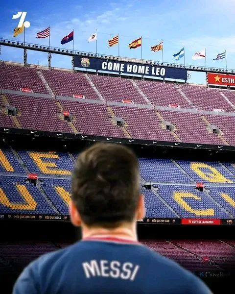

Messi revisita casa do Barcelona
09 de Novembro de 2025 Lionel Messi retorna ao Camp Nou a casa do Barcelona, onde possui as principais conquistas de sua carreira. Será que Argentino volta a defender o Barcelona nos gramados?
Lionel Messi retorna ao Camp Nou a casa do Barcelona, onde possui as principais conquistas de sua carreira. Será que Argentino volta a defender o Barcelona nos gramados?
Faltam poucas rodadas para o fim do campeonato brasileiro e a briga pela liderança está entre Palmeiras e Flamengo, ambos com os mesmos número de jogos e pontos, mas sem confronto direto. Outros dois times com pouca diferença de pontos mas com uma partida a mais é o Cruzeiro e o Mirassol, ambos já confirmados na Copa Libertadores de 2026. E ai torcedor quem vai levantar a taça do Brasileirão 2025?
No dia 5 de dezembro pela Copa do mundo da FIFA serão sorteados os 12 grupos com 48 seleções presentes, na sede da Copa do mundo em Whashington D.C. nos Estados Unidos, Canadá e México tambem receberão jogos pelo campeonato que teria seu início em 11 de Junho e a final em 19 de Julho, qual será o grupo do Brasil? O torcedor está confiante na seleção pra 2026?